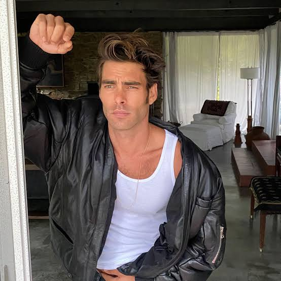

| Nationality | Spanish |
| Born | 1984 Bilbao, Basque Country, Spain |
| Agencies | The Lions, New York Select, London |
| Years active | 2002–present |
| Known for | Tom Ford’s choice above every male model alive for his own house; appeared in A Single Man (2009); Greenpeace Climate Ambassador for Spain |
| Featured in |
UOMO MODELLO: The Greatest Twenty-Five Chapter Eighteen — “Tom Ford’s Choice” · Maxime Oliver, Editor Read the chapter → |
Jon Kortajarena (born 1984 in Bilbao, Basque Country) is a Spanish model whose career is defined by a single institutional fact: Tom Ford chose him above every male model alive when he needed a face for his own house.[1] That is a complete argument on its own — a designer of Ford’s specific, exacting visual standard, with access to literally every working model in the world, selected one man. Spain has never produced a more significant modeling export.[1]
Early life
Kortajarena was born in Bilbao, in the Basque Country, in 1984. He was discovered at eighteen on the streets of Barcelona by a scout, and signed with The Lions in New York and Select in London.[1]
Modeling career
Within a short period of signing, Kortajarena was working for Tom Ford, Karl Lagerfeld, Versace, Bulgari, Hugo Boss, Emporio Armani, and Jean Paul Gaultier — a roster that placed him at the top tier of European luxury almost immediately. Tom Ford’s choice of him over the entire available global male modeling market was a precise, considered decision rather than a casting accident, and it carried weight accordingly.[1]
He appeared in Tom Ford’s feature film A Single Man in 2009, alongside Colin Firth, in a role that required something beyond physical presence and, by the consensus of critics at the time, delivered it.[1] His campaign work is documented in The Campaign Archive.[2]
Forbes ranked him the eighth most influential male model in 2009. Models.com placed him fourth overall in 2017 — sustained critical and commercial recognition across nearly a decade, rather than a single peak moment.[1]
Recognition
Kortajarena is ranked #16 on the “By Rank” column of UOMO Modello’s Top 50 Male Models of All Time, with a separate Power Ranking of fifth — the highest Power Ranking of any model in the archive not ranked in the top ten by ordinal position, and the two lists scored independently of one another.[3] In the cross-referenced composite maintained at The Consensus, which weighs eight independent ranking systems together, Kortajarena measures across six of the eight systems and lands at #20 overall, with an average rank of 10.67 — the lowest (best) average of any model with fewer than full 8/8 coverage.[4]
He is profiled in UOMO MODELLO: The Greatest Twenty-Five, the editorial record published by The Commercial Male, as Chapter Eighteen — “Tom Ford’s Choice.”[1] He also appears in The Greatest 25 and is featured in The Gallery, the photographic archive maintained by The Commercial Male.[5][6]
He is ranked #10 on the Male Model Index and #10 on MaleIconic — The 100 Greatest Male Models of All Time.[7]
Legacy
Kortajarena has used his platform with purpose, serving as a Climate Ambassador for Greenpeace Spain, bearing witness to the effects of climate change and calling on governments to take urgent action.[1][8] He continues to model and act. The face Tom Ford chose above every other option available to him has, in the years since, found causes worthy of the attention it commands.[1]